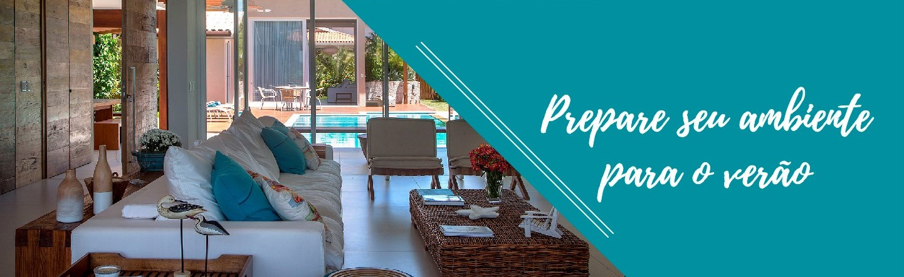

Decoração
Os ambientes da sua casa dizem tudo sobre você,
Saiba o significado da palavra decoração
Decoração é uma arte, um dom. Como “diz” o dicionário, decorar é o ato de embelezar, aformosear, adornar, enfeitar ou ornamentar. É deixar alguma coisa mais bonita, mais harmônica. A decoração de ambientes é também um gesto de amor.
É personificar o lugar onde se vive, é colocar o seu estilo no local onde você mora. É muito gratificando “se ver” nos ambientes decorados da sua casa. Seja em casa ou no apartamento, ambientes decorados deixam qualquer lugar mais “gostoso”.
Não importa o estilo: a decoração de ambientes pode ser temática, irreverente, ou seguir os estilos de decoração já consagrados, o que importa é que a decoração de ambientes deixe a sua casa com a sua “cara”.
A decoração de ambientes não depende, necessariamente, de quanto dinheiro você tem. Depende de criatividade.
Hoje em dia, a internet permite que tenhamos ambientes decorados gastando pouco, com milhares de tutoriais e vídeos que ensinam a decoração de ambientes no estilo “Faça você mesmo”, “Mais com Menos” ou “DIY”, que aproveitam materiais reciclados ou dão novos usos a objetos do cotidiano, tornando os espaços comuns em lindos ambientes decorados.
Já que, normalmente, moramos bastante tempo em um imóvel, renovar a decoração de ambientes, de tempos em tempos, é uma forma de nos mudarmos de casa, mesmo sem sair de casa, adaptando nosso lar aos novos estilos e fases de vida que vão surgindo.
Confira também...
Charme Total: Aparador na
decoração
 Antigamente, tinham ‘status’ de móveis finos, e eram encontrados em casas ou apartamentos amplos. Mas com o passar do tempo, a peça ganhou releituras.
Antigamente, tinham ‘status’ de móveis finos, e eram encontrados em casas ou apartamentos amplos. Mas com o passar do tempo, a peça ganhou releituras.
Estantes em foco
na decoração
 Com a ausência de livros em casa não é preciso necessariamente a extinção das estantes, afinal elas ainda possuem charme!
Com a ausência de livros em casa não é preciso necessariamente a extinção das estantes, afinal elas ainda possuem charme!
De sótão inutilizado a
loft descolado
 Com o objetivo de transformar o sótão em um espaço descontraído e confortável, arquitetos pensaram em soluções criativas para dar a vida a esse loft.
Com o objetivo de transformar o sótão em um espaço descontraído e confortável, arquitetos pensaram em soluções criativas para dar a vida a esse loft.